Base & Intake
The base features a lightened bellypan, center rails, and a mezzanine structure to act as a gravity-fed path. The intake uses nine 4" 30A durometer wheels powered by a Neo motor, testing feasibility of pulling fuel over the bumpers.
Welcome to our interactive documentation. A comprehensive breakdown of our robots, strategies, and engineering processes for the 2026 season.
Explore the Bot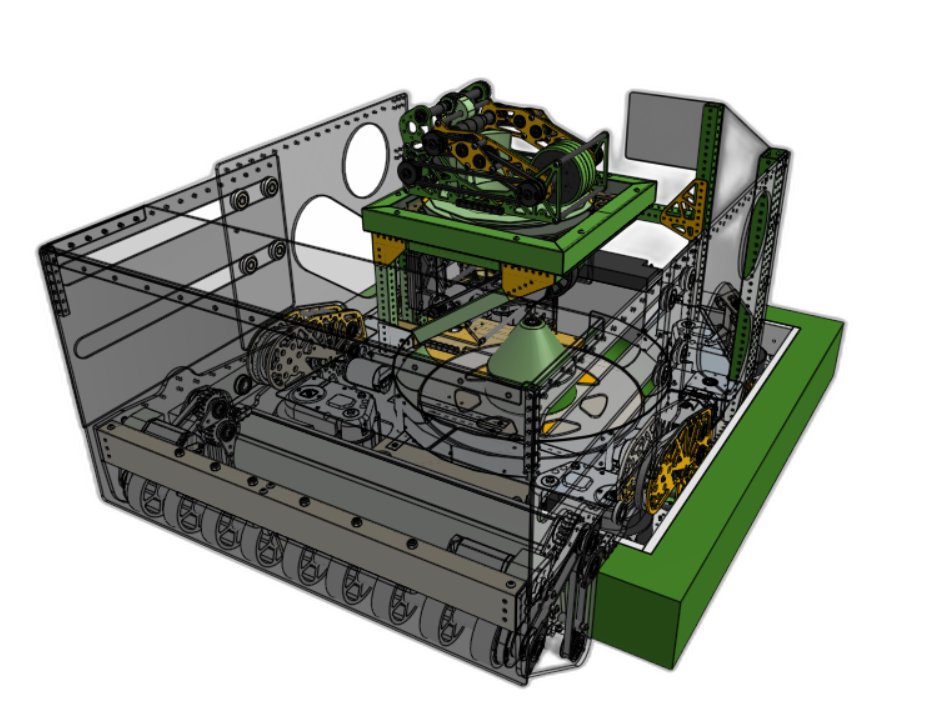
Analyzing the game, prioritizing tasks, and setting functional goals.
We hosted a kickoff event at our facility, inviting other teams to watch the FIRST live stream. We organized a list of actions a robot or alliance can perform and narrowed down tasks to Must, Could, or Won't do.

We modeled early archetypes to identify the optimal geometry and mechanism placements before creating the MVR.
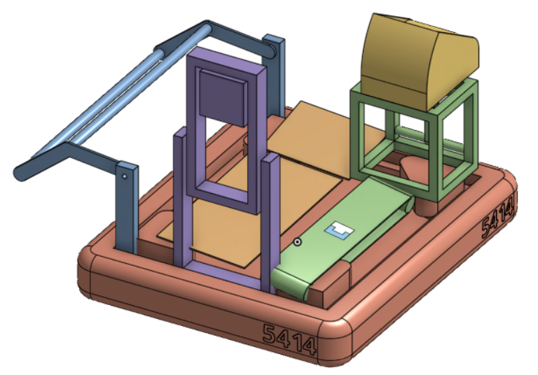
Minimally Viable Robot - Designed for rapid testing, driver practice, and identifying the best competition robot architecture.
The base features a lightened bellypan, center rails, and a mezzanine structure to act as a gravity-fed path. The intake uses nine 4" 30A durometer wheels powered by a Neo motor, testing feasibility of pulling fuel over the bumpers.
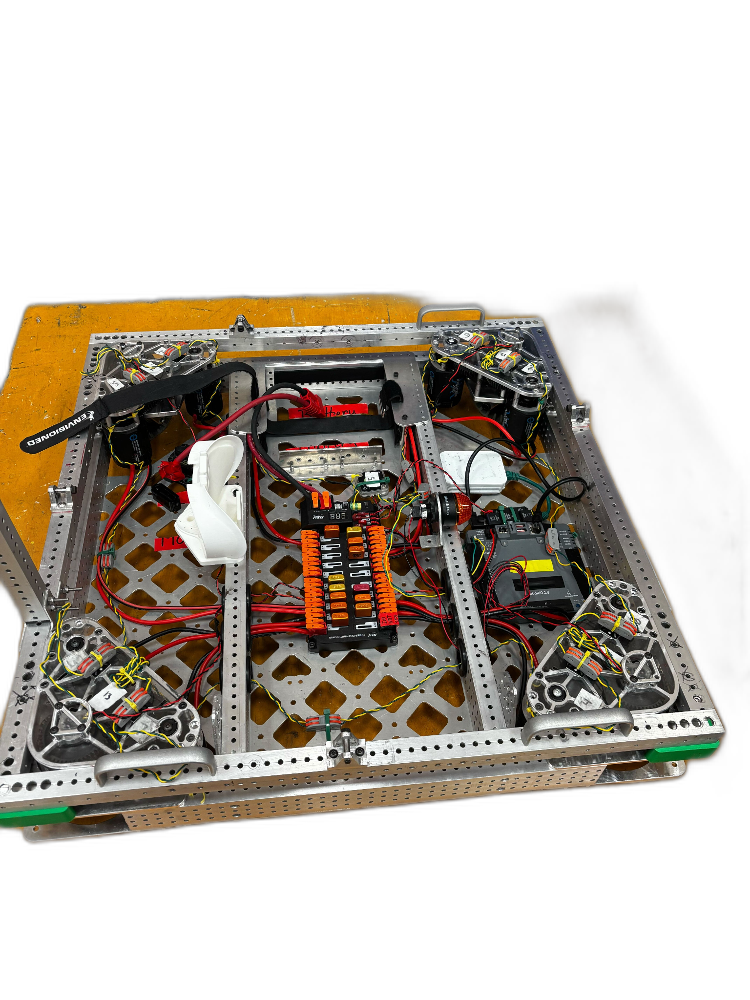
A massive wood hopper maximized fuel storage (35+). Initially gravity-fed, we quickly added agitators and switched to a spindexer. The simple launcher tested reliability with two Kraken x60s and an adjustable PLA hood.
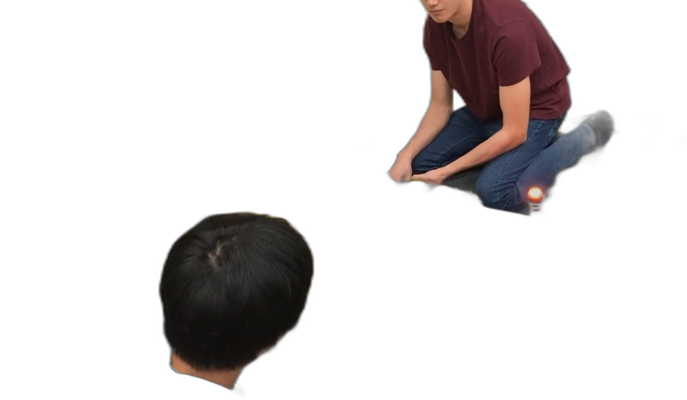
Our first competition-ready robot design, bringing concepts to reality.
Driven by four MK5N Swerve Modules, with a completely protective "brainpan" for electronics. Polycarbonate bellypan protects all routed wiring.
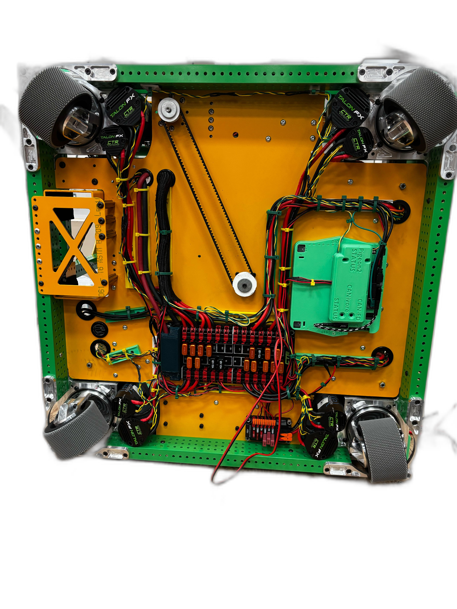
Custom gearboxes with torque sync (Kraken x60 pivot + Kraken x44 rollers). Slapdown archetype with 5 polycarbonate rollers and silicone sleeving.
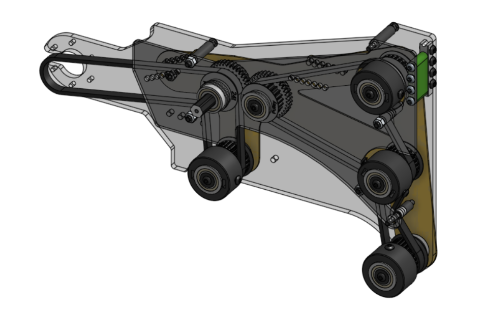
A massive gravity-fed basin into an 8" pneumatic spindexer wheel moves fuel quickly to the launcher. Compresses fuel slightly to feed consistently to the feeder.
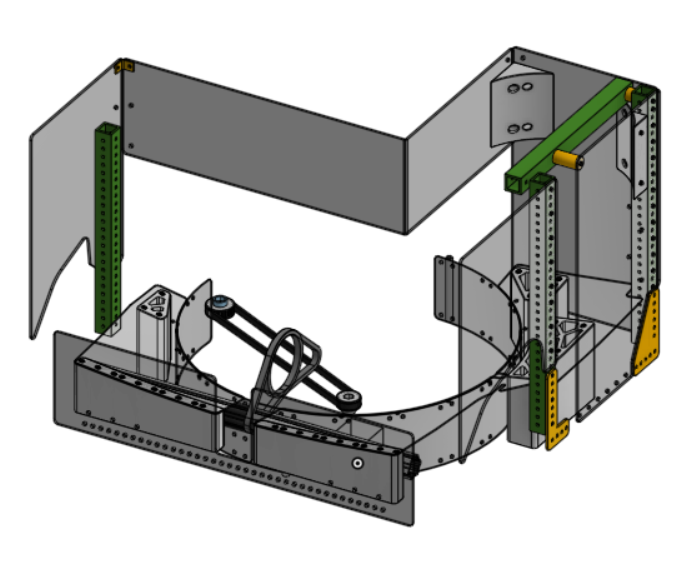
A 55.56:1 turret driven by a Kraken x44. High-speed Andymark servos controlled an adjustable 3DP hood (20-60deg), feeding fuel into two Kraken x60s on a 1:1 firing output.
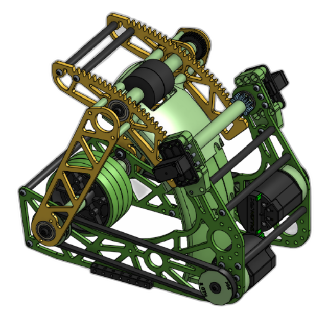
The feeder intakes fuel from the spindexer, creating a smooth hand-off from hopper to launcher. Multi-wheel drive using a Kraken x44 at 4:1 for reliable torque and speed. A CANrange sensor detects fuel in the feeder before passing.
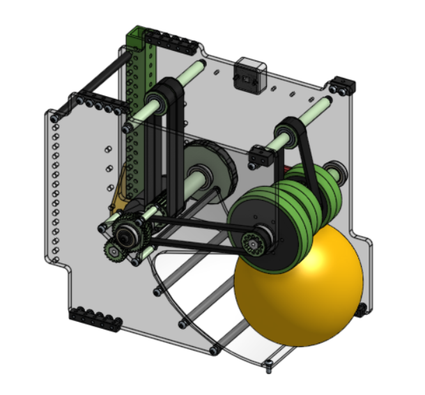
Two pairs of 50A durometer 2” blue compliant wheels. Telescoping arm mechanism attached to a NEO Vortex motor with a ratio of 25:1. 90 degree gearbox used for better packaging.
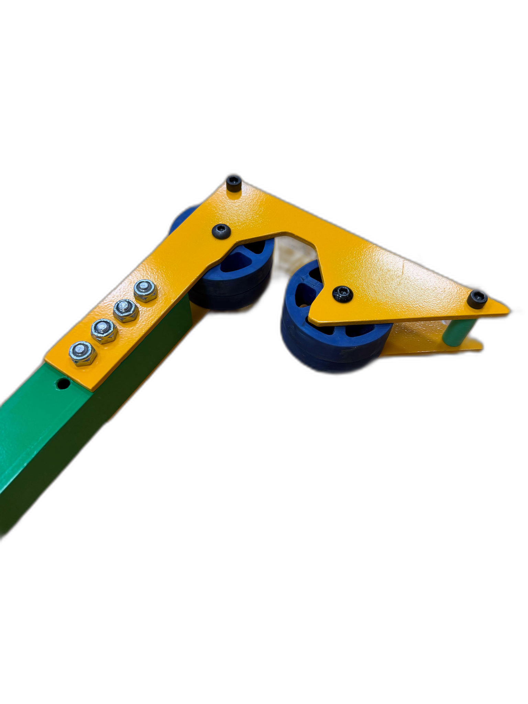
Refining our iteration. Our final peak-performance iteration.
Adjustments from Cleopeartra: Removed mezzanine rails & lift kits to reduce weight and height. Mirrored electronics layout for superior battery clearance.
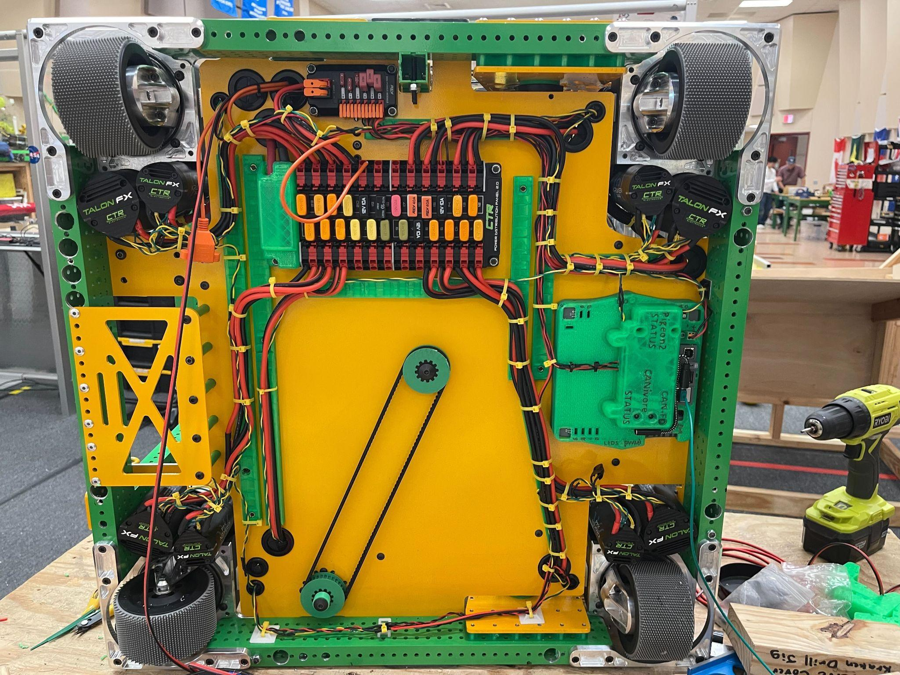
Intake Overhaul: We "Gary-ified" the intake structure, returning to a simpler, more rugged design. Transitioned from rigid polycarb to Thrifty Squish Wheels, permanently deployed the kicker, and added aluminum crash bars.
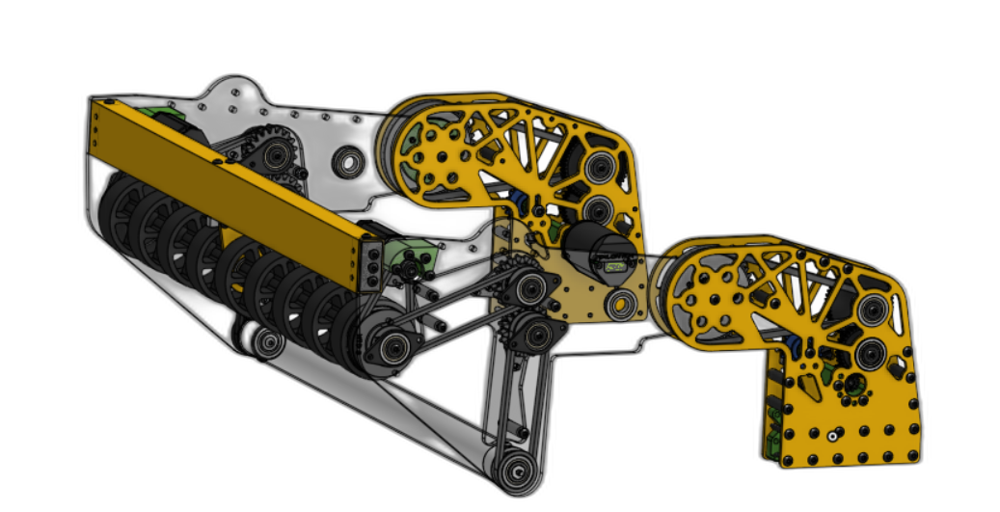
Added expanding hopper walls, doubling capacity to 55 fuel. Upgraded to a custom 3D printed agitator cone with a moving floor, utilizing Cat Tongue grip tape to maximize grip.
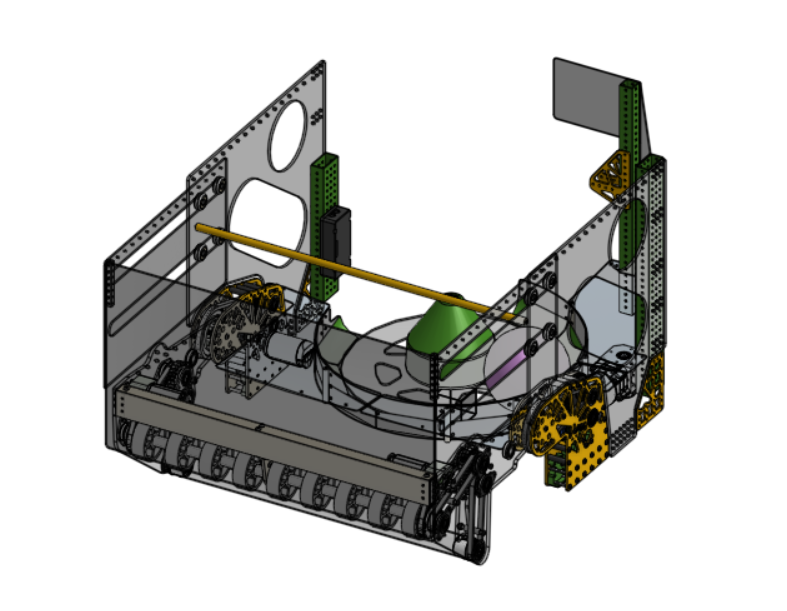
Replaced hood servos with a Kraken x44 for speed and power. Symmetric hood arms to prevent wobbliness. 45:1 turret ratio with improved wire management.
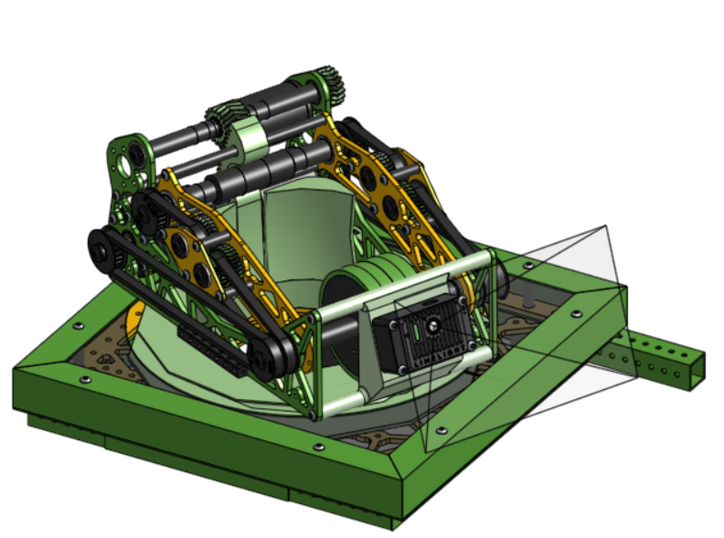
Shortened and lightened to fit the smaller robot profile while maintaining the parallel 15mm belt pairs driven by 20T and 34T 3DP pulleys. Includes CANrange sensors for rapid fire timing.
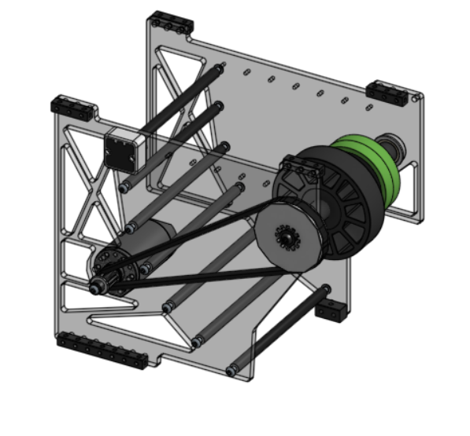
By leveraging advanced odometry and Limelight targeting, our turret and hood dynamically adjust while driving. This prevents stopping to shoot, drastically increasing our cycles per match.
Using PathPlanner, we crafted reliable multi-fuel autos capable of starting from anywhere, focusing on sweeping fuel paths and rapid scoring under the trench.
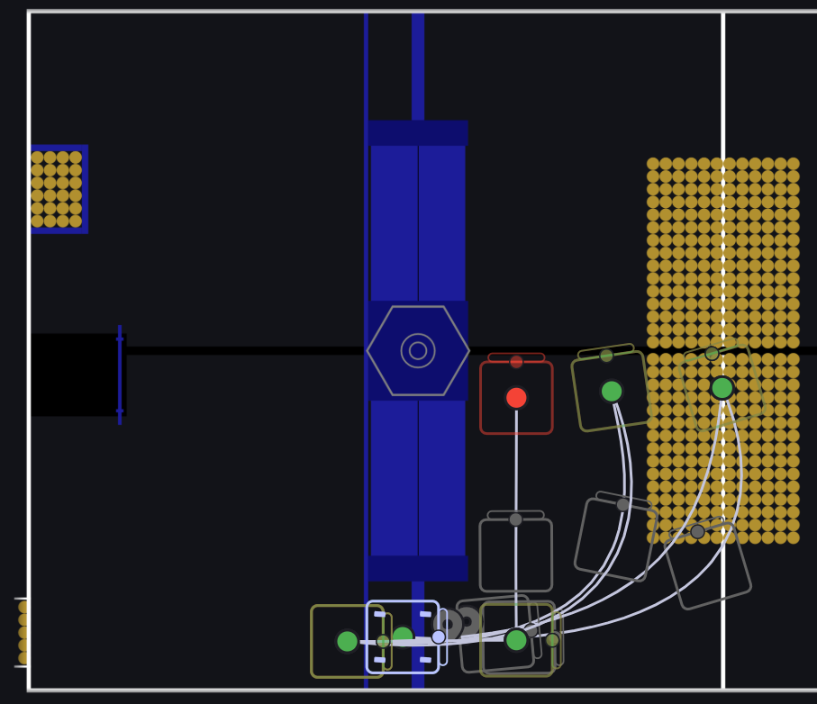
Our custom scouting app, organized around our workflow. Iterative design allows our scouts to collect detailed metrics, predicting match outcomes and guiding alliance selections.
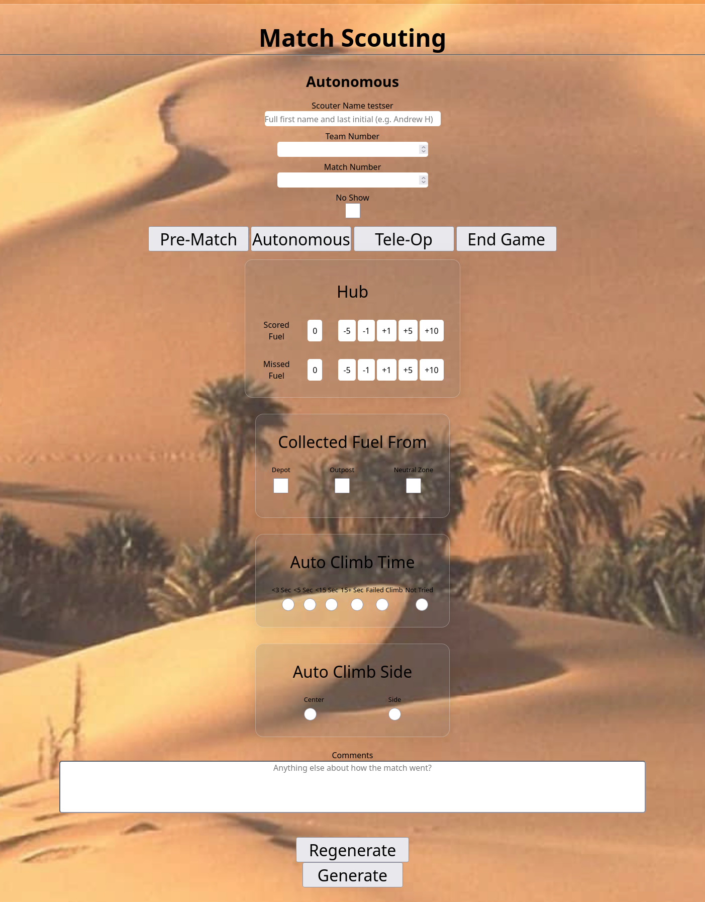